Arithmetic from the figures you enter, not a recommended position. Settings are kept in this browser only.
| HK | ET | Item |
|---|---|---|
| 21:47 | 08:47 | Automated Pre-Market Refresh (Gap & Level Recalculation) |
| 22:30 | 09:30 | US open |
| 23:00 | 10:00 | First 30 minutes complete (opening scenario check) |
| 02:00 (next day) | 13:00 | US close (early close) |
| Trigger (QQQ) | From ref. price | Meaning | |
|---|---|---|---|
| ↑ | Close back above 21EMA 666.84 | +4.1% | Price condition for the pilot gate (also needs score ≥ 40, now 29) |
| ↑ | Close back above 200-day MA 683.50 | +6.7% | long-term divide; until it is regained, treat bounces as hitting resistance |
| ↑ | Close back above 50-day MA 707.05 | +10.3% | Price condition for the long gate (also needs Regime A or B) |
| ↑ | FTD: from rally day 4, a one-day gain ≥ 1.25% on higher volume than the prior day | — | Pilot gate opens (25% of standard risk); Next session is day 4 |
| ↓ | Break below the correction low 606.23 | -5.4% | Rally attempt void, count restarts |
| Brief date | Score | Gates / cycle | Top picks / changes |
|---|---|---|---|
| 11-27 (Fri) This run, updated 11-26 04:05 | 29 E | Downtrend open In correction; rally attempt day 3 | Ready USFD, AHR, HOG, AIZ, ALLE +AHR +HOG −LH −MRSH |
| 11-25 (Wed) Updated 11-25 01:45 | 24 E | Downtrend open In correction; rally attempt day 2 | Ready LH, USFD, AIZ, ALLE, MRSH |
| 11-24 (Tue) | 18 E | no run record; score recomputed from today’s data | |
| 11-23 (Mon) | 20 E | no run record; score recomputed from today’s data | |
| 11-20 (Fri) | 18 E | no run record; score recomputed from today’s data | |
| 11-19 (Thu) | 27 D | no run record; score recomputed from today’s data | |
| 11-18 (Wed) | 26 D | no run record; score recomputed from today’s data | |
| 11-17 (Tue) | 32 D | no run record; score recomputed from today’s data | |
| 11-16 (Mon) | 45 C | no run record; score recomputed from today’s data | |
| 11-13 (Fri) | 46 C | no run record; score recomputed from today’s data | |
| Ticker | Pattern | Checklist | Trend | RS | Sector | Contraction | Volume | Money flow | Distance | Event | Close | Pivot | Price vs pivot | Invalidation | Risk | Simulated shares | RS | Sector | Earnings date |
|---|---|---|---|---|---|---|---|---|---|---|---|---|---|---|---|---|---|---|---|
| USFD | Tightening+Relative strength | 8/8 | ✓ | ✓ | ✓ | ✓ | ✓ | ✓ | ✓ | ✓ | 111.66 | 112.04 | -0.3% | 104.97 | 6.3% | 26 | 90 | Consumer Staples (#1) | — |
| AHR | Tightening+Relative strength | 8/8 | ✓ | ✓ | ✓ | ✓ | ✓ | ✓ | ✓ | ✓ | 60.24 | 60.75 | -0.8% | 56.80 | 6.5% | 47 | 89 | Real Estate (#2) | — |
| HOG | Tightening+Relative strength | 7/8 | ✓ | ✓ | ✗ | ✓ | ✓ | ✓ | ✓ | ✓ | 34.20 | 34.43 | -0.7% | 32.00 | 7.1% | 76 | 99 | Consumer Discretionary (#5) | 02-10 |
| AIZ | Tightening | 7/8 | ✓ | ✓ | ✗ | ✓ | ✓ | ✓ | ✓ | ✓ | 325.73 | 328.07 | -0.7% | 312.17 | 4.8% | 11 | 97 | Financials (#7) | 02-09 |
| ALLE | Tightening+Relative strength | 7/8 | ✓ | ✓ | ✗ | ✓ | ✓ | ✓ | ✓ | ✓ | 192.20 | 193.99 | -0.9% | 182.34 | 6.0% | 16 | 94 | Industrials (#9) | 02-16 |
| Ticker | Pattern | What’s missing | Checklist | Trend | RS | Sector | Contraction | Volume | Money flow | Distance | Event | Close | Pivot | Price vs pivot | RS | Sector | Earnings date |
|---|---|---|---|---|---|---|---|---|---|---|---|---|---|---|---|---|---|
| MAS | Tightening+Relative strength | Ready slots full (5 names), ranked lower | 6/8 | ✓ | ✓ | ✗ | ✓ | ✓ | ✗ | ✓ | ✓ | 86.93 | 87.55 | -0.7% | 97 | Industrials (#9) | 02-09 |
| THG | Tightening+Pullback | Ready slots full (5 names), ranked lower | 6/8 | ✓ | ✓ | ✗ | ✓ | ✓ | ✗ | ✓ | ✓ | 247.85 | 252.75 | -1.9% | 92 | Financials (#7) | 02-02 |
| ALL | Tightening | Ready slots full (5 names), ranked lower | 6/8 | ✓ | ✓ | ✗ | ✓ | ✓ | ✗ | ✓ | ✓ | 271.39 | 275.71 | -1.6% | 88 | Financials (#7) | — |
| FCN | New-high breakout | Ready slots full (5 names), ranked lower | 6/8 | ✓ | ✓ | ✗ | ✓ | ✗ | ✓ | ✓ | ✓ | 212.29 | 211.06 | +0.6% | 98 | Industrials (#9) | — |
| DIS | New-high breakout+Relative strength | Ready slots full (5 names), ranked lower | 6/8 | ✓ | ✓ | ✗ | ✗ | ✓ | ✓ | ✓ | ✓ | 125.60 | 123.49 | +1.7% | 94 | Communication (#6) | 02-01 |
| ADP | New-high breakout+Relative strength | Ready slots full (5 names), ranked lower | 6/8 | ✓ | ✓ | ✗ | ✓ | ✗ | ✓ | ✓ | ✓ | 316.72 | 316.46 | +0.1% | 94 | Industrials (#9) | 01-27 |
| DRI | New-high breakout+Relative strength | Ready slots full (5 names), ranked lower | 6/8 | ✓ | ✓ | ✗ | ✓ | ✗ | ✓ | ✓ | ✓ | 241.16 | 240.98 | +0.1% | 93 | Consumer Discretionary (#5) | 12-18 |
| MAR | Pullback | Ready slots full (5 names), ranked lower | 6/8 | ✓ | ✓ | ✗ | ✓ | ✗ | ✓ | ✓ | ✓ | 415.77 | 419.04 | -0.8% | 90 | Consumer Discretionary (#5) | 02-09 |
| CNO | Pullback+Relative strength | Ready slots full (5 names), ranked lower | 6/8 | ✓ | ✓ | ✗ | ✗ | ✓ | ✓ | ✓ | ✓ | 56.11 | 56.52 | -0.7% | 81 | Financials (#7) | — |
| EXR | Relative strength | Only on the relative-strength list; no contraction or breakout pattern yet | 8/8 | ✓ | ✓ | ✓ | ✓ | ✓ | ✓ | ✓ | ✓ | 161.39 | 161.93 | -0.3% | 88 | Real Estate (#2) | — |
| Ticker | Pattern | Checklist | Trend | RS | Sector | Not oversold | Money flow | Distance | Squeeze | Event | Close | Pivot | Price vs pivot | Invalidation | Risk | Simulated shares | RS | Sector | Earnings date |
|---|---|---|---|---|---|---|---|---|---|---|---|---|---|---|---|---|---|---|---|
| XYL | Pullback to resistance | 7/8 | ✓ | ✓ | ✓ | ✓ | ✗ | ✓ | ✓ | ✓ | 96.42 | 93.82 | +2.8% | 97.34 | 3.8% | 106 | 17 | Industrials (#9) | — |
| HBAN | Pullback to resistance | 7/8 | ✓ | ✓ | ✗ | ✓ | ✓ | ✓ | ✓ | ✓ | 14.88 | 14.48 | +2.8% | 15.04 | 3.9% | 658 | 18 | Financials (#7) | — |
| PLD | Pullback to resistance | 7/8 | ✓ | ✓ | ✗ | ✓ | ✓ | ✓ | ✓ | ✓ | 127.03 | 123.50 | +2.9% | 128.67 | 4.2% | 72 | 26 | Real Estate (#2) | — |
| Ticker | Pattern | What’s missing | Checklist | Trend | RS | Sector | Not oversold | Money flow | Distance | Squeeze | Event | Close | Pivot | Price vs pivot | RS | Sector | Earnings date |
|---|---|---|---|---|---|---|---|---|---|---|---|---|---|---|---|---|---|
| FHN | Pullback to resistance | A slots full (3 names), ranked lower | 7/8 | ✓ | ✓ | ✗ | ✓ | ✓ | ✓ | ✓ | ✓ | 22.36 | 21.85 | +2.3% | 27 | Financials (#7) | — |
| GGG | Pullback to resistance | A slots full (3 names), ranked lower | 7/8 | ✓ | ✓ | ✓ | ✓ | ✗ | ✓ | ✓ | ✓ | 72.10 | 70.09 | +2.9% | 30 | Industrials (#9) | — |
| SBAC | Pullback to resistance | A slots full (3 names), ranked lower | 6/8 | ✓ | ✓ | ✗ | ✓ | ✗ | ✓ | ✓ | ✓ | 174.73 | 169.83 | +2.9% | 24 | Real Estate (#2) | — |
| FICO | Pullback to resistance | 3-day high to trigger 10.7%, more than 8% | 8/8 | ✓ | ✓ | ✓ | ✓ | ✓ | ✓ | ✓ | ✓ | 699.81 | 685.72 | +2.1% | 7 | Technology (#11) | 01-27 |
| BA | Pullback to resistance | Price above trigger 3.5%, not there yet | 6/7 | ✓ | ✓ | ✓ | ✓ | ✓ | ✗ | – | ✓ | 164.53 | 158.94 | +3.5% | 12 | Industrials (#9) | — |
| Ticker | Pattern | Grade | Reason | RS | Price to trigger |
|---|---|---|---|---|---|
| GKOS | VCP | Watch | Pattern low from entry, more than 8%: wait for the pattern to tighten further; B-grade slots full | 99 | +3.7% |
| CART | VCP+Pullback | Watch | Distance to trigger 3.5%; B-grade slots full | 91 | -3.5% |
| TMO | Tightening+Pullback | Watch | Distance to trigger 3.7%; B-grade slots full | 83 | -3.7% |
| JLL | Tightening+Relative strength | Watch | 10-day low from entry, more than 8%: wait for the pattern to tighten further; B-grade slots full | 82 | -0.7% |
| LIVN | Relative strength | Watch | Only on the relative-strength list; no contraction or breakout pattern yet; B-grade slots full | 98 | -1.4% |
| CAH | Relative strength | Watch | Only on the relative-strength list; no contraction or breakout pattern yet; B-grade slots full | 97 | -0.8% |
| SIRI | Relative strength | Watch | Only on the relative-strength list; no contraction or breakout pattern yet; B-grade slots full | 96 | -1.9% |
| EW | Relative strength | Watch | Only on the relative-strength list; no contraction or breakout pattern yet; B-grade slots full | 96 | -1.5% |
| CUBE | Relative strength | Watch | Only on the relative-strength list; no contraction or breakout pattern yet; B-grade slots full | 90 | -0.5% |
| MANH | Tightening+Relative strength | Watch | Distance to trigger 3.1%; B-grade slots full | 97 | -3.1% |
| CDW | Tightening+Relative strength | Watch | 10-day low from entry, more than 8%: wait for the pattern to tighten further; B-grade slots full | 96 | -0.4% |
| HAE | Tightening+Pullback | Watch | Distance to trigger 4.5%; B-grade slots full | 94 | -4.5% |
| PCTY | Tightening+Relative strength | Watch | Distance to trigger 3.5%; 10-day low from entry, more than 8%: wait for the pattern to tighten further; B-grade slots full | 94 | -3.5% |
| MORN | Tightening+Pullback | Watch | Distance to trigger 4.7%; 10-day low from entry, more than 8%: wait for the pattern to tighten further; B-grade slots full | 91 | -4.7% |
| FDS | Tightening | Watch | Distance to trigger 4.3%; 10-day low from entry, more than 8%: wait for the pattern to tighten further; B-grade slots full | 87 | -4.3% |
| MTD | Pullback | Watch | Distance to trigger 5.4%; B-grade slots full | 86 | -5.4% |
| CROX | Relative strength | Watch | Only on the relative-strength list; no contraction or breakout pattern yet; B-grade slots full | 99 | -2.6% |
| REGN | Relative strength | Watch | Only on the relative-strength list; no contraction or breakout pattern yet; B-grade slots full | 98 | -1.0% |
| BDX | Relative strength | Watch | Only on the relative-strength list; no contraction or breakout pattern yet; B-grade slots full | 98 | -0.7% |
| ROP | Relative strength | Watch | Only on the relative-strength list; no contraction or breakout pattern yet; B-grade slots full | 94 | -0.9% |
| MSI | Relative strength | Watch | Only on the relative-strength list; no contraction or breakout pattern yet; B-grade slots full | 94 | -0.4% |
| SPG | Relative strength | Watch | Only on the relative-strength list; no contraction or breakout pattern yet; B-grade slots full | 86 | -1.4% |
| VRSN | Relative strength | Watch | Only on the relative-strength list; no contraction or breakout pattern yet; B-grade slots full | 84 | -1.5% |
| PSA | Relative strength | Watch | Only on the relative-strength list; no contraction or breakout pattern yet; B-grade slots full | 83 | -0.5% |
| AVNT | VCP+Relative strength | Watch | Distance to trigger 3.5%; Pattern low from entry, more than 8%: wait for the pattern to tighten further; Checklist: 3 items fail (Sector, Money flow, Distance) | 85 | -3.5% |
| GEN | Tightening | Watch | Distance to trigger 3.2%; Checklist: 3 items fail (Sector, Money flow, Distance); B-grade slots full | 83 | -3.2% |
| WTW | New-high breakout | Watch | Checklist: 3 items fail (Sector, Contraction, Money flow); B-grade slots full | 84 | +0.3% |
| EXLS | New-high breakout | Watch | Checklist: 3 items fail (Sector, Contraction, Volume); B-grade slots full | 96 | +1.2% |
| RGA | New-high breakout+Relative strength | Watch | Checklist: 3 items fail (Sector, Contraction, Volume); B-grade slots full | 95 | +0.4% |
| MRSH | New-high breakout+Relative strength | Watch | Checklist: 3 items fail (Sector, Contraction, Volume); B-grade slots full | 94 | +1.2% |
| OMC | New-high breakout+Relative strength | Watch | Checklist: 3 items fail (Sector, Volume, Money flow); B-grade slots full | 84 | +1.3% |
| VTRS | Pullback | Watch | Checklist: 3 items fail (Contraction, Volume, Money flow); B-grade slots full | 95 | -0.9% |
| BTSG | Pullback | Watch | Distance to trigger 3.0%; Checklist: 3 items fail (Contraction, Volume, Distance); B-grade slots full | 88 | -3.0% |
| CVLT | Pullback | Watch | Checklist: 3 items fail (Sector, Contraction, Volume); B-grade slots full | 85 | -0.2% |
| MOH | Pullback | Watch | 3-day low from entry, more than 8%: wait for the pattern to tighten further; Checklist: 3 items fail (Contraction, Volume, Money flow); B-grade slots full | 83 | -2.1% |
| NDAQ | Pullback+Relative strength | Watch | Checklist: 3 items fail (Sector, Contraction, Volume); B-grade slots full | 81 | -0.3% |
| EXPD | Pullback | Watch | Checklist: 3 items fail (Sector, Contraction, Volume); B-grade slots full | 81 | -0.6% |
| SN | Relative strength | Watch | Only on the relative-strength list; no contraction or breakout pattern yet; Checklist: 3 items fail (Sector, Contraction, Volume); B-grade slots full | 99 | -1.2% |
| ANF | Relative strength | Watch | Only on the relative-strength list; no contraction or breakout pattern yet; Checklist: 3 items fail (Sector, Contraction, Volume); B-grade slots full | 98 | -0.8% |
| ROIV | Relative strength | Watch | Only on the relative-strength list; no contraction or breakout pattern yet; Checklist: 3 items fail (Contraction, Volume, Money flow); B-grade slots full | 98 | -1.2% |
| CPAY | Relative strength | Watch | Only on the relative-strength list; no contraction or breakout pattern yet; Checklist: 3 items fail (Sector, Contraction, Volume); B-grade slots full | 97 | -2.5% |
| BBY | Relative strength | Watch | Only on the relative-strength list; no contraction or breakout pattern yet; Checklist: 3 items fail (Sector, Volume, Money flow); B-grade slots full | 96 | -2.7% |
| AJG | Relative strength | Watch | Only on the relative-strength list; no contraction or breakout pattern yet; Checklist: 3 items fail (Sector, Volume, Money flow); B-grade slots full | 95 | -0.8% |
| MA | Relative strength | Watch | Only on the relative-strength list; no contraction or breakout pattern yet; Checklist: 3 items fail (Sector, Contraction, Volume); B-grade slots full | 93 | -1.2% |
| V | Relative strength | Watch | Only on the relative-strength list; no contraction or breakout pattern yet; Checklist: 3 items fail (Sector, Contraction, Volume); B-grade slots full | 92 | -1.5% |
| TRV | Relative strength | Watch | Only on the relative-strength list; no contraction or breakout pattern yet; Checklist: 3 items fail (Sector, Volume, Money flow); B-grade slots full | 92 | -0.6% |
| ZBH | Relative strength | Watch | Only on the relative-strength list; no contraction or breakout pattern yet; Checklist: 3 items fail (Contraction, Volume, Money flow); B-grade slots full | 91 | -0.4% |
| CTAS | Relative strength | Watch | Only on the relative-strength list; no contraction or breakout pattern yet; Checklist: 3 items fail (Sector, Contraction, Volume); B-grade slots full | 89 | -1.2% |
| AAPL | Relative strength | Watch | Only on the relative-strength list; no contraction or breakout pattern yet; Checklist: 3 items fail (Sector, Volume, Money flow); B-grade slots full | 86 | -1.5% |
| CCK | Relative strength | Watch | Only on the relative-strength list; no contraction or breakout pattern yet; Checklist: 3 items fail (Sector, Contraction, Money flow); B-grade slots full | 85 | -0.5% |
| VRTX | Relative strength | Watch | Only on the relative-strength list; no contraction or breakout pattern yet; Checklist: 3 items fail (Contraction, Volume, Money flow); B-grade slots full | 85 | -1.3% |
| TTC | Relative strength | Watch | Only on the relative-strength list; no contraction or breakout pattern yet; Checklist: 3 items fail (Sector, Contraction, Volume); B-grade slots full | 80 | -2.4% |
| SWK | Pullback | Watch | Checklist: 4 items fail (Sector, Contraction, Volume, Money flow); B-grade slots full | 95 | -2.4% |
| OKTA | Pullback | Watch | Distance to trigger 5.3%; 12-01 earnings (2 sessions later), wait until after; 3-day low from entry, more than 8%: wait for the pattern to tighten further; Checklist: 4 items fail (Sector, Contraction, Distance, Event) | 92 | -5.3% |
| DOCU | Relative strength | Watch | Only on the relative-strength list; no contraction or breakout pattern yet; 12-03 earnings (4 sessions later), wait until after; Checklist: 4 items fail (Sector, Volume, Money flow, Event) | 92 | -1.0% |
| DBX | Relative strength | Watch | Only on the relative-strength list; no contraction or breakout pattern yet; Checklist: 4 items fail (Sector, Contraction, Volume, Money flow); B-grade slots full | 85 | -1.0% |
| MMM | Relative strength | Watch | Only on the relative-strength list; no contraction or breakout pattern yet; Checklist: 4 items fail (Sector, Contraction, Volume, Money flow); B-grade slots full | 83 | -0.6% |
| SAIC | Relative strength | Watch | Only on the relative-strength list; no contraction or breakout pattern yet; Distance to trigger 4.0%; 12-03 earnings (4 sessions later), wait until after; Checklist: 5 items fail (Sector, Volume, Money flow, Distance, Event) | 94 | -4.0% |
| PTC | Tightening | Excluded | Range abnormally small (ATR 0.5%, 10-day range 1.2%), likely pinned after a takeover, not a tightening pattern | 89 | -0.5% |
| PAG | Tightening | Excluded | Range abnormally small (ATR 0.4%, 10-day range 1.2%), likely pinned after a takeover, not a tightening pattern | 74 | -0.6% |
| Ticker | Trigger | Simulated qty |
|---|---|---|
| USFD Buy Stop-limit order Backup · gates closed | 112.04 Limit 112.59 | 24 shares Invalidation 104.97 Max loss $183 |
| AHR Buy Stop-limit order Backup · gates closed | 60.76 Limit 61.02 | 43 shares Invalidation 56.79 Max loss $182 |
| HOG Buy Stop-limit order Backup · gates closed | 34.44 Limit 34.66 | 69 shares Invalidation 31.99 Max loss $184 |
| AIZ Buy Stop-limit order Backup · gates closed | 328.07 Limit 329.24 | 10 shares Invalidation 312.17 Max loss $171 |
| ALLE Buy Stop-limit order Backup · gates closed | 194.00 Limit 194.87 | 14 shares Invalidation 182.34 Max loss $175 |
| XYL Short Stop-limit order Within limit | 93.81 Limit 93.34 | 93 shares Invalidation 97.35 Max loss $373 |
| HBAN Short Stop-limit order Backup | 14.47 Limit 14.39 | 567 shares Invalidation 15.05 Max loss $374 |
| PLD Short Stop-limit order Backup | 123.49 Limit 122.99 | 65 shares Invalidation 128.68 Max loss $370 |
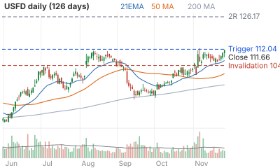
| Status | Awaiting break above: prior close 111.66, to pivot -0.2%. Gate closed: listed for observation only |
| Pivot (technical trigger) | 112.04 (pivot 111.93 + 0.1%) |
| Rule chase limit | 117.52 (pivot + 5%); the rules do not chase above this price |
| Invalidation | 104.97 (10-day low), from entry 6.3% |
| Simulated size | 26 shares, about $2,913 (account 2.9%); loss at invalidation about $184. Sized at pilot risk |
| Model 2R reference | Risk per share 112.04 − 104.97 = 7.06; 2R = 112.04 + 2 × 7.06 = 126.17; 3R = 133.23 |
| Events and volatility | Earnings date —; Days to cover 5.1; short covering on breakouts; ATR 2.5% |
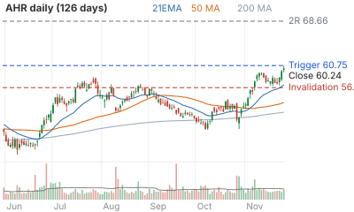
| Status | Awaiting break above: prior close 60.24, to pivot -0.7%. Gate closed: listed for observation only |
| Pivot (technical trigger) | 60.75 (pivot 60.69 + 0.1%) |
| Rule chase limit | 63.72 (pivot + 5%); the rules do not chase above this price |
| Invalidation | 56.80 (10-day low), from entry 6.5% |
| Simulated size | 47 shares, about $2,855 (account 2.9%); loss at invalidation about $186. Sized at pilot risk |
| Model 2R reference | Risk per share 60.75 − 56.80 = 3.95; 2R = 60.75 + 2 × 3.95 = 68.66; 3R = 72.61 |
| Events and volatility | Earnings date —; Days to cover 10.2; short covering on breakouts; ATR 2.2% |
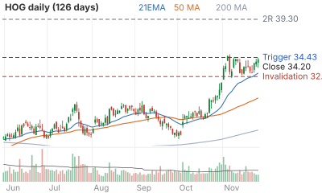
| Status | Awaiting break above: prior close 34.20, to pivot -0.6%. Gate closed: listed for observation only |
| Pivot (technical trigger) | 34.43 (pivot 34.40 + 0.1%) |
| Rule chase limit | 36.12 (pivot + 5%); the rules do not chase above this price |
| Invalidation | 32.00 (10-day low), from entry 7.1% |
| Simulated size | 76 shares, about $2,617 (account 2.6%); loss at invalidation about $185. Sized at pilot risk |
| Model 2R reference | Risk per share 34.43 − 32.00 = 2.44; 2R = 34.43 + 2 × 2.44 = 39.30; 3R = 41.74 |
| Events and volatility | Earnings date 02-10; Days to cover 7.8; short covering on breakouts; ATR 3.3% |
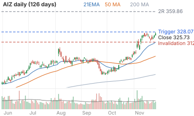
| Status | Awaiting break above: prior close 325.73, to pivot -0.6%. Gate closed: listed for observation only |
| Pivot (technical trigger) | 328.07 (pivot 327.74 + 0.1%) |
| Rule chase limit | 344.13 (pivot + 5%); the rules do not chase above this price |
| Invalidation | 312.17 (10-day low), from entry 4.8% |
| Simulated size | 11 shares, about $3,609 (account 3.6%); loss at invalidation about $175. Sized at pilot risk |
| Model 2R reference | Risk per share 328.07 − 312.17 = 15.90; 2R = 328.07 + 2 × 15.90 = 359.86; 3R = 375.76 |
| Events and volatility | Earnings date 02-09; Days to cover 3.3; ATR 1.8% |
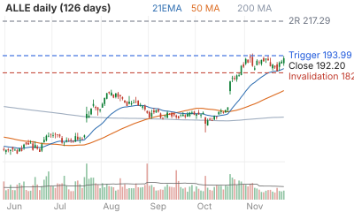
| Status | Awaiting break above: prior close 192.20, to pivot -0.8%. Gate closed: listed for observation only |
| Pivot (technical trigger) | 193.99 (pivot 193.80 + 0.1%) |
| Rule chase limit | 203.49 (pivot + 5%); the rules do not chase above this price |
| Invalidation | 182.34 (10-day low), from entry 6.0% |
| Simulated size | 16 shares, about $3,104 (account 3.1%); loss at invalidation about $186. Sized at pilot risk |
| Model 2R reference | Risk per share 193.99 − 182.34 = 11.65; 2R = 193.99 + 2 × 11.65 = 217.29; 3R = 228.94 |
| Events and volatility | Earnings date 02-16; Days to cover 2.4; ATR 2.3% |
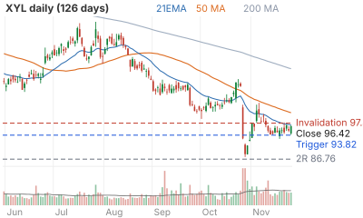
| Status | Awaiting break below: prior close 96.42, above the pivot by 2.8% |
| Pivot (technical trigger) | 93.82 (3-day low 93.91 − 0.1%) |
| Rule short-chase limit | 91.00 (below the pivot by 3%); the rules do not chase below this price |
| Invalidation | 97.34 (above the 3-day high), from entry 3.8% |
| Simulated size | 106 shares, about $9,945 (account 9.9%); loss at invalidation about $374 |
| Model 2R reference | Risk per share 97.34 − 93.82 = 3.53; 2R = 93.82 − 2 × 3.53 = 86.76; 3R = 83.23 |
| Events and volatility | Earnings date —; Days to cover 2.9; ATR 2.5% |
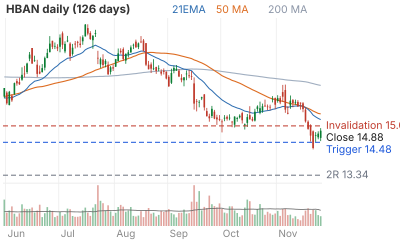
| Status | Awaiting break below: prior close 14.88, above the pivot by 2.8% |
| Pivot (technical trigger) | 14.48 (3-day low 14.49 − 0.1%) |
| Rule short-chase limit | 14.04 (below the pivot by 3%); the rules do not chase below this price |
| Invalidation | 15.04 (above the 3-day high), from entry 3.9% |
| Simulated size | 658 shares, about $9,525 (account 9.5%); loss at invalidation about $375 |
| Model 2R reference | Risk per share 15.04 − 14.48 = 0.57; 2R = 14.48 − 2 × 0.57 = 13.34; 3R = 12.77 |
| Events and volatility | Earnings date —; Days to cover 3.1; ATR 2.7% |
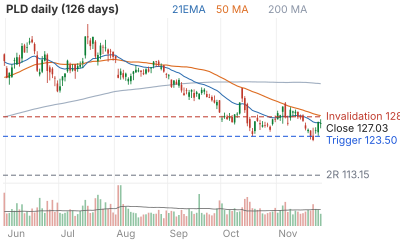
| Status | Awaiting break below: prior close 127.03, above the pivot by 2.9% |
| Pivot (technical trigger) | 123.50 (3-day low 123.62 − 0.1%) |
| Rule short-chase limit | 119.79 (below the pivot by 3%); the rules do not chase below this price |
| Invalidation | 128.67 (above the 3-day high), from entry 4.2% |
| Simulated size | 72 shares, about $8,892 (account 8.9%); loss at invalidation about $373 |
| Model 2R reference | Risk per share 128.67 − 123.50 = 5.17; 2R = 123.50 − 2 × 5.17 = 113.15; 3R = 107.98 |
| Events and volatility | Earnings date —; Days to cover 4.6; ATR 2.0% |
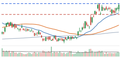
Trigger 87.55 (-0.7%) · invalidation 81.73 Still needs: Ready slots full (5 names), ranked lower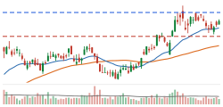
Trigger 252.75 (-1.9%) · invalidation 238.81 Still needs: Ready slots full (5 names), ranked lower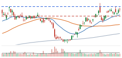
Trigger 275.71 (-1.6%) · invalidation 261.09 Still needs: Ready slots full (5 names), ranked lower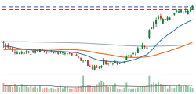
Trigger 211.06 (+0.6%) · invalidation 207.36 Still needs: Ready slots full (5 names), ranked lower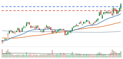
Trigger 123.49 (+1.7%) · invalidation 120.37 Still needs: Ready slots full (5 names), ranked lower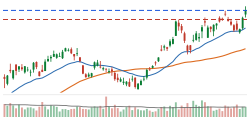
Trigger 316.46 (+0.1%) · invalidation 309.44 Still needs: Ready slots full (5 names), ranked lower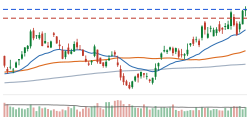
Trigger 240.98 (+0.1%) · invalidation 235.63 Still needs: Ready slots full (5 names), ranked lower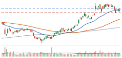
Trigger 419.04 (-0.8%) · invalidation 405.98 Still needs: Ready slots full (5 names), ranked lower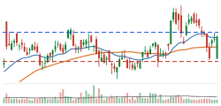
Trigger 56.52 (-0.7%) · invalidation 53.65 Still needs: Ready slots full (5 names), ranked lower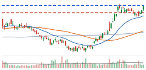
Trigger 161.93 (-0.3%) · invalidation 157.07 Still needs: Only on the relative-strength list; no contraction or breakout pattern yet| Ticker | Side | Price | Reason |
|---|---|---|---|
| QQQ | Break above | 666.84 | Price condition for the pilot gate (also needs score ≥ 40, now 29) |
| QQQ | Break above | 683.50 | long-term divide; until it is regained, treat bounces as hitting resistance |
| QQQ | Break above | 707.05 | Price condition for the long gate (also needs Regime A or B) |
| QQQ | Break below | 606.23 | Rally attempt void, count restarts |
| USFD | Break above | 112.04 | Ready | Tightening+Relative strength pivot; invalidation 104.97 |
| AHR | Break above | 60.75 | Ready | Tightening+Relative strength pivot; invalidation 56.80 |
| HOG | Break above | 34.43 | Ready | Tightening+Relative strength pivot; invalidation 32.00 |
| AIZ | Break above | 328.07 | Ready | Tightening pivot; invalidation 312.17 |
| ALLE | Break above | 193.99 | Ready | Tightening+Relative strength pivot; invalidation 182.34 |
| XYL | Break below | 93.82 | Short A | break of the 3-day low; invalidation 97.34 |
| HBAN | Break below | 14.48 | Short A | break of the 3-day low; invalidation 15.04 |
| PLD | Break below | 123.50 | Short A | break of the 3-day low; invalidation 128.67 |
| MAS | Break above | 87.55 | B grade | Tightening+Relative strength; still needs: Ready slots full (5 names), ranked lower |
| THG | Break above | 252.75 | B grade | Tightening+Pullback; still needs: Ready slots full (5 names), ranked lower |
| ALL | Break above | 275.71 | B grade | Tightening; still needs: Ready slots full (5 names), ranked lower |
| MAR | Break above | 419.04 | B grade | Pullback; still needs: Ready slots full (5 names), ranked lower |
| CNO | Break above | 56.52 | B grade | Pullback+Relative strength; still needs: Ready slots full (5 names), ranked lower |
| EXR | Break above | 161.93 | B grade | Relative strength; still needs: Only on the relative-strength list; no contraction or breakout pattern yet |
| Group | Total | Trigger rate | Hit-2R rate | Average R |
|---|---|---|---|---|
| Top: gate open (A grade) | Building the sample (3 records) | |||
| Top: gate closed (ready) | Building the sample (5 records) | |||
| Top, all | Building the sample (8 records) | |||
| Other candidates (control group) | 140 | — | — | — |
| Ticker | Side | Listed | Status | Sessions since | R (hypothetical) | Trigger | Invalidation |
|---|---|---|---|---|---|---|---|
| XYL | Short | 11-27 | Pending | 0 | — | 93.82 | 97.34 |
| USFD | Long (ready) | 11-27 | Pending | 0 | — | 112.04 | 104.97 |
| PLD | Short | 11-27 | Pending | 0 | — | 123.50 | 128.67 |
| HOG | Long (ready) | 11-27 | Pending | 0 | — | 34.43 | 32.00 |
| HBAN | Short | 11-27 | Pending | 0 | — | 14.48 | 15.04 |
| ALLE | Long (ready) | 11-27 | Pending | 0 | — | 193.99 | 182.34 |
| AIZ | Long (ready) | 11-27 | Pending | 0 | — | 328.07 | 312.17 |
| AHR | Long (ready) | 11-27 | Pending | 0 | — | 60.75 | 56.80 |
The market health score (0–100) is a weighted mix of five groups of indicators: QQQ trend, market breadth, risk appetite, volatility and rates. The score sets the A to E grade; the long, pilot and short gates open or close on the grade, the score, QQQ’s position against its averages and whether the market is oversold. This is a daily workflow for reading the market and screening technical setups, not a trade signal.
Score bands: E below 25, D 25–39, C 40–54, B 55–69, A 70 and above. A downgrade applies the same day; an upgrade needs two consecutive sessions in the higher band, so the score can sit above its grade’s band.
A-grade conditions: pattern complete, price below the trigger by at most 3% (or already above but still in the buy zone), 5 sessions with no earnings, pattern low no more than 8% from entry, at most 2 names per sector, gates allow; also in Stage 2, with at most 2 of the 8 checklist items failing. B grade misses one or two items and is within 8% of the trigger. Sorted by checklist items passed, pattern, RS. Checklist: trend = Stage 2; RS ≥ 80; sector = 1-month return ranks in the top 4; contraction = VCP, or 10-day range in the tightest 35%; volume = for names not yet broken out, volume dry-up (10-day average below 85%), for fresh breakouts look for volume on the breakout day; money flow = U/D volume ratio ≥ 1.2; “–” means no data. The thresholds are rules of thumb; A grade is a rule ranking, not a buy signal.
Grading is described above under “Follow-up on earlier lists”: each listed setup is graded automatically from later daily bars, and the record builds day by day.
| Key level | Price | From ref. price |
|---|---|---|
| 52-week high | 762.86 | +19.0% |
| 20-day high | 718.07 | +12.1% |
| 50-day MA | 707.05 | +10.3% |
| 200-day MA | 683.50 | +6.7% |
| 21EMA | 666.84 | +4.1% |
| Prior high | 634.89 | -0.9% |
| Prior close | 633.93 | -1.1% |
| Prior low | 607.74 | -5.2% |
| 20-day low | 606.23 | -5.4% |
| Correction low | 606.23 | -5.4% |
| Pillar | Weight | Score | Now | 5-day change |
|---|---|---|---|---|
| Trend | 30% | 17 | +0 | |
| Breadth | 25% | 55 | +9 | |
| Risk appetite | 20% | 25 | +0 | |
| Volatility | 15% | 0 | -12 | |
| Rates and credit | 10% | 50 | +17 |
| ETF | Index | Close | 1 day | 5-day | > 21EMA | > 50-day MA | > 200-day MA | From 52-week high | Distribution days |
|---|---|---|---|---|---|---|---|---|---|
| QQQ | Nasdaq 100 | 633.93 | -0.7% | -3.9% | – | – | – | -16.9% | 8 |
| SPY | S&P 500 | 716.70 | -0.3% | -1.8% | – | – | – | -8.3% | 10 |
| DIA | Dow | 501.27 | +0.3% | -0.1% | – | – | – | -8.3% | 9 |
| IWM | Russell 2000 | 268.87 | +0.6% | -0.5% | – | – | – | -11.9% | 7 |
| RSP | S&P 500 equal-weight | 215.74 | +0.8% | +0.1% | – | ✓ | ✓ | -3.8% | 7 |
| SMH | Semiconductors | 422.46 | -1.0% | -8.1% | – | – | – | -37.1% | 5 |
| Range | Count | > 50-day MA | > 200-day MA | Stage 2 | 52-week high breakout | 52-week low breakdown |
|---|---|---|---|---|---|---|
| Nasdaq 100 | 100 | 43% | 42% | 24% | 1 | 0 |
| S&P 500 | 501 | 59% | 54% | 33% | 6 | 0 |
| S&P 400 mid caps | 399 | 54% | 48% | 25% | 7 | 0 |
| Whole universe | 915 | 56% | 51% | 29% | 13 | 0 |
| Date | Day’s drop | Sessions left | void once QQQ closes above this |
|---|---|---|---|
| 10-22 | -2.9% | 1 | 739.69 |
| 10-29 | -1.4% | 6 | 751.11 |
| 10-30 | -3.5% | 7 | 725.01 |
| 11-13 | -1.2% | 17 | 713.88 |
| 11-16 | -2.7% | 18 | 694.84 |
| 11-17 | -0.7% | 19 | 689.80 |
| 11-19 | -2.2% | 21 | 677.29 |
| 11-25 | -0.7% | 25 | 665.63 |
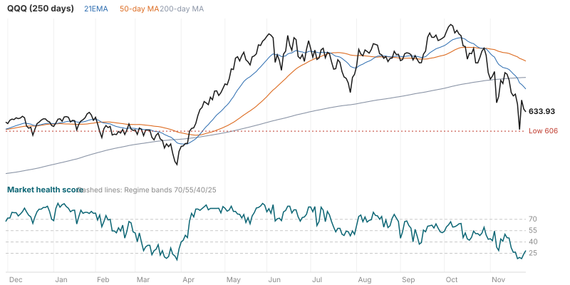
| Pillar | Check | Current | Points | |
|---|---|---|---|---|
| Trend | ✗ | Close > 21EMA | 633.93 vs 666.84 | 0 / 1 |
| Trend | ✗ | Close > 50-day MA | 633.93 vs 707.05 | 0 / 1 |
| Trend | ✗ | Close > 200-day MA | 633.93 vs 683.50 | 0 / 1 |
| Trend | ✗ | 21EMA > 50-day MA | — | 0 / 1 |
| Trend | ✓ | 50-day MA > 200-day MA | — | 1 / 1 |
| Trend | ✗ | 50-day MA above 10 days ago | — | 0 / 1 |
| Trend | ✓ | 200-day MA above 20 days ago | — | 1 / 1 |
| Trend | ✗ | from 52-week high 5% or less | -16.9% | 0 / 1 |
| Trend | ✗ | 20-day high above the prior 20-day high | — | 0 / 1 |
| Trend | ✗ | 20-day low above the prior 20-day low | — | 0 / 1 |
| Trend | ✗ | distribution days in last 25 sessions | 8 | 0 / 1 |
| Trend | ✗ | SPY > 50-day MA | — | 0 / 0.5 |
| Trend | ✗ | IWM > 50-day MA | — | 0 / 0.5 |
| Breadth | ◐ | share of stocks above 50-day MA | 56% | 2 / 3 |
| Breadth | ◐ | share of stocks above 200-day MA | 51% | 2 / 3 |
| Breadth | ✓ | share above 20-day MA higher than 5 days ago | 45% (5 days ago 40%) | 1 / 1 |
| Breadth | ✗ | 52-week new highs > new lows | 30 vs 36 | 0 / 1 |
| Breadth | ✗ | (new highs − new lows) 10-day average > 0 | -8.8 | 0 / 1 |
| Breadth | ✓ | McClellan Oscillator > 0 | 8.5 | 1 / 1 |
| Breadth | ✗ | A/D line > its 20-day MA | — | 0 / 1 |
| Risk appetite | ✗ | SMH/QQQ > 50-day MA | below | 0 / 1 |
| Risk appetite | ✓ | RSP/SPY > 50-day MA | above | 1 / 1 |
| Risk appetite | ✓ | IWM/SPY > 50-day MA | above | 1 / 1 |
| Risk appetite | ✗ | XLY/XLP > 50-day MA | below | 0 / 1 |
| Risk appetite | ✗ | SPHB/SPLV > 50-day MA | below | 0 / 1 |
| Risk appetite | ✗ | share of leaders above 50-day MA | 10% | 0 / 2 |
| Risk appetite | ✗ | at most 1 defensive sector among the top 3 | XLP, XLRE, XLV | 0 / 1 |
| Volatility | ✗ | VIX level | 28.3 | 0 / 3 |
| Volatility | ✗ | VIX < its 20-day MA | 20-day avg 23.1 | 0 / 1 |
| Volatility | ✗ | VIX/VIX3M term structure | 1.08 | 0 / 2 |
| Volatility | ✗ | VXN < its 20-day MA | VXN 38.5 | 0 / 1 |
| Volatility | ✗ | VXN − VIX spread ≤ 1-year median | 10.2 (median 5.9) | 0 / 1 |
| Rates and credit | ✓ | 10-year yield 20-day change | 4.85% (-20 bp) | 2 / 2 |
| Rates and credit | ✗ | HYG/IEF > 50-day MA | below | 0 / 2 |
| Rates and credit | ✗ | HYG > 50-day MA | below | 0 / 1 |
| Rates and credit | ✓ | Dollar index 20-day gain < 2% | +1.4% | 1 / 1 |
| Item | Latest | Since the US close | Quote time (ET) |
|---|---|---|---|
| Nasdaq 100 futures | 26,389.75 | +1.09% | 11-25 23:45 |
| S&P 500 futures | 7,247.75 | +0.71% | 11-25 23:45 |
| Russell 2000 futures | 2,721.70 | +0.59% | 11-25 23:45 |
| VIX | 26.63 | -5.33% | 11-26 03:45 |
| 10-year yield | 4.85 | — | no new quote after the close |
| Dollar index | 103.81 | +0.11% | 11-25 23:45 |
| Crude oil | 84.42 | +0.34% | 11-25 23:45 |
| Gold | 3,620.40 | +0.49% | 11-25 23:45 |
| Bitcoin | 60,795.67 | +1.03% | 11-26 04:00 |
| Ticker | Company | Reports | Earnings surprise | Price reaction | Reaction source | Volume × | RS | Stage | Read |
|---|---|---|---|---|---|---|---|---|---|
| DELL | Dell Technologies Inc. | 11-24 after close | +43.5% | +0.6% | all day | 3.29 | 31 | 3 Topping | muted reaction |
| DE | Deere & Company | 11-25 before open | -4.0% | +4.4% | all day | 1.91 | 71 | 3 Topping | Missed but rose: strong |
| ADSK | Autodesk, Inc. | 11-24 after close | +4.3% | -3.5% | all day | 1.69 | 39 | 2 Advancing | Beat but fell: weak |
| WDAY | Workday, Inc. | 11-24 after close | +2.8% | +0.7% | all day | 1.79 | 48 | 3 Topping | muted reaction |
| HPQ | HP Inc. | 11-24 after close | +12.0% | +11.5% | all day | 2.86 | 75 | 2 Advancing | Beat, rose |
| NTNX | Nutanix, Inc. | 11-24 after close | +20.6% | -15.2% | all day | 5.36 | 13 | 3 Topping | Beat but fell: weak |
| Ticker | Earnings date | Session | Sessions away | Positions |
|---|---|---|---|---|
| OKTA | 12-01 | after close | 2 | – |
| DRI | 12-18 | before open | 15 | – |
| Ticker | Use | Options expiry | Days | Underlying price used | Strike | Straddle cost | Lower breakeven | Upper breakeven |
|---|---|---|---|---|---|---|---|---|
| QQQ | Market: nearest expiry | 11-27 | 2 | 633.93 | 634.00 | 2.1% | 620.67 | 647.33 |
| OKTA | Earnings 12-01 after close | 12-04 | 9 | 201.77 | 202.50 | 16.2% | 169.90 | 235.10 |
| Tenor | Ticker | Level |
|---|---|---|
| 1 day | VIX1D | 39.36 |
| 9 days | VIX9D | 29.61 |
| 30 days (VIX) | VIX | 28.29 |
| 3 months | VIX3M | 26.29 |
| 6 months | VIX6M | 26.89 |
| Volatility of VIX (VVIX) | VVIX | 115.38 |
| Tail risk (SKEW) | SKEW | 142.06 |
| Ticker | Company | List | Last price | vs prior close | RS | Stage | In universe | On list / held | Earnings date |
|---|---|---|---|---|---|---|---|---|---|
| WLDSW | Wearable Devices Ltd. | Top gainers | 71.18 | +73.6% | — | — | – | – | — |
| RIBBU | Ribbon Acquisition Corp Un | Top gainers | 95.17 | +68.9% | — | — | – | – | — |
| FCUV | Focus Universal Inc. | Top gainers | 5.65 | +53.1% | — | — | – | – | — |
| Ticker | From | Settlement date | Shares short (M) | vs prior period | Days to cover | Read |
|---|---|---|---|---|---|---|
| FFIN | Short focus | 11-13 | 8.93 | +2.3% | 11.20 | Days to cover above 5: higher squeeze risk (short-side risk note) |
| AHR | Long focus | 11-13 | 33.32 | -1.1% | 10.20 | Heavy short interest: short covering on breakouts |
| CDP | Short focus | 11-13 | 10.93 | +2.4% | 9.85 | Days to cover above 5: higher squeeze risk (short-side risk note) |
| DRI | Long focus | 11-13 | 7.48 | +1.1% | 8.02 | Heavy short interest: short covering on breakouts |
| HOG | Long focus | 11-13 | 18.54 | -6.2% | 7.78 | Heavy short interest: short covering on breakouts |
| LIVN | Long focus | 11-13 | 6.37 | +0.1% | 6.33 | Heavy short interest: short covering on breakouts |
| USFD | Long focus | 11-13 | 15.31 | +1.3% | 5.12 | Heavy short interest: short covering on breakouts |
| ADP | Long focus | 11-13 | 10.43 | +9.5% | 4.64 | Fairly heavy short interest |
| PLD | Short focus | 11-13 | 17.36 | +2.8% | 4.59 | Fairly heavy short interest |
| ALL | Long focus | 11-13 | 7.44 | +13.2% | 4.28 | Fairly heavy short interest |
| LII | Short focus | 11-13 | 2.41 | -11.2% | 3.85 | Fairly heavy short interest |
| CAH | Long focus | 11-13 | 6.69 | -11.7% | 3.82 | Fairly heavy short interest |
| MAS | Long focus | 11-13 | 8.53 | +8.1% | 3.81 | Fairly heavy short interest |
| MAR | Long focus | 11-13 | 6.78 | +6.8% | 3.71 | Fairly heavy short interest |
| CNO | Long focus | 11-13 | 2.79 | +8.8% | 3.69 | Fairly heavy short interest |
| FCN | Long focus | 11-13 | 1.80 | -31.5% | 3.52 | Fairly heavy short interest |
| AIZ | Long focus | 11-13 | 1.57 | -4.9% | 3.28 | Fairly heavy short interest |
| FICO | Short focus | 11-13 | 2.40 | -5.4% | 3.24 | Fairly heavy short interest |
| HBAN | Short focus | 11-13 | 52.42 | -10.5% | 3.08 | Fairly heavy short interest |
| THG | Long focus | 11-13 | 0.93 | -0.7% | 3.01 | Fairly heavy short interest |
| GGG | Short focus | 11-13 | 5.20 | -10.9% | 2.92 | Light short interest |
| SBAC | Short focus | 11-13 | 3.29 | -2.5% | 2.91 | Light short interest |
| XYL | Short focus | 11-13 | 8.60 | -0.7% | 2.87 | Light short interest |
| EXR | Long focus | 11-13 | 4.08 | -16.3% | 2.66 | Light short interest |
| FHN | Short focus | 11-13 | 15.09 | +6.5% | 2.62 | Light short interest |
| DIS | Long focus | 11-13 | 21.78 | +3.1% | 2.50 | Light short interest |
| AKAM | Short focus | 11-13 | 22.09 | +15.2% | 2.45 | Light short interest |
| ALLE | Long focus | 11-13 | 2.30 | -7.7% | 2.38 | Light short interest |
| SFM | Pullback to resistance | 11-13 | 9.36 | -14.2% | 2.23 | Light short interest |
| BROS | Pullback to resistance | 11-13 | 15.10 | -11.0% | 2.16 | Light short interest |
| ALNY | Pullback to resistance | 11-13 | 5.59 | +2.2% | 1.65 | Light short interest |
| EW | Long focus | 11-13 | 9.92 | +5.7% | 1.56 | Light short interest |
| Rank | 5-day rank change | ETF | Sector | 1 month | 3 months | 1-month excess | > 50-day MA | From 52-week high | Members > 50-day MA | 52-week highs | 52-week lows |
|---|---|---|---|---|---|---|---|---|---|---|---|
| 1 | ↑1 | XLP | Consumer Staples | +5.9% | +9.2% | +12.8% | ✓ | -1.3% | 79% | 0 | 0 |
| 2 | ↑2 | XLRE | Real Estate | +3.3% | -1.0% | +10.2% | ✓ | -5.6% | 83% | 1 | 0 |
| 3 | ↑3 | XLV | Health Care | +2.5% | +7.5% | +9.4% | ✓ | -4.5% | 71% | 1 | 0 |
| 4 | ↓3 | XLU | Utilities | +1.8% | +1.7% | +8.7% | ✓ | -8.8% | 84% | 0 | 0 |
| 5 | ↓2 | XLY | Consumer Discretionary | +1.8% | +1.6% | +8.6% | ✓ | -6.0% | 73% | 3 | 0 |
| 6 | ↑3 | XLC | Communication | +1.7% | -5.1% | +8.6% | – | -12.5% | 61% | 2 | 0 |
| 7 | ↓2 | XLF | Financials | +1.1% | -2.0% | +8.0% | ✓ | -5.9% | 56% | 3 | 0 |
| 8 | — | XLB | Materials | -1.1% | -3.4% | +5.8% | ✓ | -6.3% | 50% | 0 | 0 |
| 9 | ↓2 | XLI | Industrials | -3.0% | -8.6% | +3.9% | – | -13.4% | 55% | 3 | 0 |
| 10 | — | XLE | Energy | -10.7% | -1.7% | -3.8% | – | -13.2% | 11% | 0 | 0 |
| 11 | — | XLK | Technology | -17.8% | -17.3% | -10.9% | – | -23.4% | 21% | 0 | 0 |
| Industry group (GICS) | Count | 1-month median | 3-month median | > 50-day MA | Median RS | New highs | Top 3 by RS |
|---|---|---|---|---|---|---|---|
| Apparel, Accessories & Luxury Goods | 7 | +13.2% | +13.9% | 100% | 74 | 1 | COLM, VFC, PVH |
| Health Care Distributors | 4 | +10.1% | +15.3% | 100% | 86 | 0 | CAH, MCK, COR |
| Insurance Brokers | 7 | +13.6% | +9.9% | 100% | 86 | 2 | AJG, MRSH, RYAN |
| Industrial Conglomerates | 4 | +11.1% | +8.4% | 100% | 84 | 0 | CSL, DD, MMM |
| Data Processing & Outsourced Services | 4 | +7.9% | +10.3% | 100% | 77 | 1 | EXLS, G, BR |
| Health Care Facilities | 6 | +7.4% | +12.8% | 100% | 81 | 0 | EHC, THC, OPCH |
| Consumer Staples Merchandise Retail | 6 | +10.2% | +14.3% | 83% | 90 | 0 | DLTR, TGT, WMT |
| Household Products | 4 | +8.0% | +8.3% | 100% | 77 | 0 | CHD, CL, CLX |
| Industry group (GICS) | Count | 1-month median | 3-month median | > 50-day MA | Median RS | New highs | Top 3 by RS |
|---|---|---|---|---|---|---|---|
| Semiconductor Materials & Equipment | 10 | -17.5% | -33.3% | 0% | 11 | 0 | ENTG, Q, KLAC |
| Electronic Manufacturing Services | 7 | -18.5% | -31.9% | 0% | 6 | 0 | TEL, FLEX, JBL |
| Communications Equipment | 8 | -20.4% | -23.3% | 12% | 20 | 0 | MSI, ANET, CSCO |
| Semiconductors | 26 | -20.0% | -18.7% | 12% | 24 | 0 | SWKS, SYNA, SLAB |
| Agricultural Products & Services | 4 | -12.8% | -18.2% | 0% | 18 | 0 | DAR, ADM, INGR |
| Technology Hardware, Storage & Peripherals | 9 | -29.3% | -25.0% | 22% | 43 | 0 | AAPL, HPQ, P |
| Oil & Gas Equipment & Services | 6 | -15.2% | -16.8% | 0% | 16 | 0 | SLB, HAL, FTI |
| Electrical Components & Equipment | 14 | -12.8% | -17.7% | 14% | 16 | 0 | WWD, EMR, AYI |
| ETF | Industry | 1 month | 3 months | 1-month excess | > 50-day MA | From 52-week high |
|---|---|---|---|---|---|---|
| ITB | Homebuilders | +8.8% | +3.7% | +15.7% | ✓ | -14.7% |
| XRT | Retail | +2.7% | +3.8% | +9.6% | ✓ | -5.6% |
| XBI | Biotech | +1.1% | -6.9% | +8.0% | ✓ | -7.8% |
| ITA | Aerospace & defense | +0.0% | -11.8% | +6.9% | – | -19.6% |
| KRE | Regional banks | -3.8% | -5.5% | +3.1% | – | -10.9% |
| GDX | Gold miners | -11.2% | -28.7% | -4.3% | – | -36.9% |
| IGV | Software | -15.0% | -13.9% | -8.1% | – | -16.4% |
| XME | Metals & mining | -15.5% | -30.9% | -8.7% | – | -37.4% |
| ARKK | Speculative growth | -20.5% | -22.9% | -13.7% | – | -29.0% |
| SMH | Semiconductors | -24.3% | -26.3% | -17.4% | – | -37.1% |
| Ticker | Sector | Stage | RS | 12-month RS (old) | 1-month RS | Close | Change | Volume × | From 52-week high | From 50-day MA | Earnings date |
|---|---|---|---|---|---|---|---|---|---|---|---|
| NVDA | XLK | 3 Topping | 5 | 7 | 4 | 149.30 | -3.9% | 1.84 | -38.7% | -26.7% | — |
| MU | XLK | 3 Topping | 25 | 88 | 3 | 601.25 | -4.5% | 1.75 | -52.1% | -32.9% | 12-17 |
| AMD | XLK | 3 Topping | 34 | 93 | 5 | 406.03 | -1.8% | 1.65 | -38.3% | -26.0% | 02-02 |
| SPCX | XLK | — | 16 | — | 16 | 127.44 | +1.3% | 1.43 | — | -13.1% | 02-09 |
| AAPL | XLK | 2 Advancing | 86 | 86 | 56 | 355.58 | +0.4% | 1.24 | -1.5% | +3.7% | 01-28 |
| META | XLC | 3 Topping | 47 | 47 | 43 | 609.89 | +3.4% | 0.86 | -21.8% | -9.3% | 01-27 |
| TSLA | XLY | 1 Basing | 37 | 37 | 29 | 380.14 | -1.2% | 0.95 | -23.8% | +0.8% | 01-27 |
| MSFT | XLK | 3 Topping | 53 | 62 | 26 | 489.93 | -1.2% | 1.06 | -12.4% | -5.7% | 01-27 |
| AMZN | XLY | 3 Topping | 41 | 49 | 37 | 244.43 | -3.1% | 1.43 | -14.9% | -4.2% | 02-04 |
| INTC | XLK | 3 Topping | 18 | 18 | 2 | 54.47 | -0.6% | 1.01 | -61.7% | -37.9% | 01-28 |
| GOOGL | XLC | 4 Declining | 10 | 12 | 15 | 273.10 | -2.1% | 1.22 | -33.2% | -14.2% | 02-03 |
| AVGO | XLK | 4 Declining | 11 | 13 | 20 | 300.86 | -0.1% | 1.30 | -39.2% | -11.7% | 12-09 |
| MRVL | XLK | 3 Topping | 23 | 42 | 1 | 130.93 | -0.5% | 1.12 | -60.3% | -39.1% | 12-01 ⚠2 days |
| ORCL | XLK | 4 Declining | 3 | 4 | 9 | 103.88 | -5.1% | 1.10 | -58.5% | -20.2% | 12-14 |
| LITE | XLK | 4 Declining | 10 | 9 | 2 | 476.58 | -2.2% | 0.97 | -58.3% | -40.7% | 02-02 |
| PLTR | XLK | 3 Topping | 37 | 52 | 12 | 163.59 | +1.5% | 0.89 | -23.2% | -10.4% | 02-01 |
| NBIS | XLK | 4 Declining | 3 | 3 | 1 | 84.99 | -2.7% | 1.60 | -71.7% | -51.2% | 02-11 |
| BE | XLI | 3 Topping | 14 | 21 | 4 | 152.89 | -2.3% | 1.07 | -56.5% | -32.9% | 02-04 |
| CRWV | XLK | 4 Declining | 1 | 1 | 5 | 42.57 | -0.1% | 1.41 | -69.2% | -35.2% | — |
| DELL | XLK | 3 Topping | 31 | 97 | 2 | 297.06 | +0.6% | 3.29 | -50.1% | -35.0% | 02-25 |
| Ticker | RS (v3) | 12-month RS (old) | 1 month | 3 months | 6 months | 9 months | 12 months | From 52-week high |
|---|---|---|---|---|---|---|---|---|
| NVDA | 5 | 7 | -31.5% | -34.5% | -30.3% | -19.2% | -18.2% | -38.7% |
| MU | 25 | 88 | -35.3% | -35.7% | -34.9% | +44.7% | +168.5% | -52.1% |
| AMD | 34 | 93 | -27.5% | -14.8% | -21.6% | +99.3% | +88.8% | -38.3% |
| SPCX | 16 | — | -14.2% | -9.5% | — | — | — | — |
| AAPL | 86 | 86 | +2.4% | +13.0% | +13.8% | +30.3% | +28.9% | -1.5% |
| META | 47 | 47 | -1.7% | +6.8% | -4.0% | -7.2% | -0.5% | -21.8% |
| TSLA | 37 | 37 | -6.7% | +7.1% | -14.0% | -7.0% | -9.0% | -23.8% |
| MSFT | 53 | 62 | -7.8% | -3.0% | +14.7% | +22.0% | +3.4% | -12.4% |
| AMZN | 41 | 49 | -3.4% | -4.6% | -10.8% | +17.6% | +8.0% | -14.9% |
| INTC | 18 | 18 | -41.9% | -40.9% | -54.9% | +19.8% | +52.2% | -61.7% |
| GOOGL | 10 | 12 | -14.8% | -19.8% | -30.0% | -11.2% | -14.3% | -33.2% |
| AVGO | 11 | 13 | -12.1% | -19.0% | -29.5% | -6.5% | -20.4% | -39.2% |
| MRVL | 23 | 42 | -46.2% | -45.8% | -36.1% | +65.1% | +56.3% | -60.3% |
| ORCL | 3 | 4 | -20.4% | -31.6% | -49.0% | -30.9% | -48.1% | -58.5% |
| LITE | 10 | 9 | -45.0% | -50.2% | -44.6% | -29.6% | +59.2% | -58.3% |
| PLTR | 37 | 52 | -17.7% | -12.0% | +14.1% | +20.3% | +0.8% | -23.2% |
| NBIS | 3 | 3 | -50.1% | -61.1% | -62.5% | -19.0% | -7.5% | -71.7% |
| BE | 14 | 21 | -30.0% | -29.8% | -47.3% | -9.3% | +60.0% | -56.5% |
| CRWV | 1 | 1 | -28.5% | -51.0% | -60.2% | -56.4% | -42.2% | -69.2% |
| DELL | 31 | 97 | -40.8% | -37.1% | -6.3% | +144.6% | +133.5% | -50.1% |
| Ticker | Sector | Sector rank | RS | Close | Pivot | From pivot | Contraction | Vol dry-up | Base days | Invalidation | Risk | Shares | Size | U/D volume ratio | Earnings date |
|---|---|---|---|---|---|---|---|---|---|---|---|---|---|---|---|
| GKOS | XLV | 3 | 99 | 259.90 | 250.61 | +3.7% | 2T 14→8% | 0.62 | 15 | 230.79 | 8.0% | 9 | 2.3% | 0.93 | 02-16 |
| CART | XLP | 1 | 91 | 57.68 | 59.76 | -3.5% | 2T 9→5% | 0.61 | 22 | 56.60 | 5.4% | 58 | 3.5% | 1.24 | 02-04 |
| AVNT | XLB | 8 | 85 | 45.41 | 47.04 | -3.5% | 2T 10→9% | 0.76 | 15 | 43.32 | 8.0% | 49 | 2.3% | 0.93 | 02-18 |
| Ticker | Sector | Sector rank | RS | Close | 10-day range | Tightness pctile | Vol dry-up | Pivot (10-day high) | From pivot | From 52-week high | U/D volume ratio | Earnings date |
|---|---|---|---|---|---|---|---|---|---|---|---|---|
| HOG | XLY | 5 | 99 | 34.20 | 6.5% | 6% | 0.84 | 34.40 | -0.6% | -1.8% | 1.55 | 02-10 |
| MAS | XLI | 9 | 97 | 86.93 | 6.1% | 23% | 0.82 | 87.46 | -0.6% | -1.1% | 0.96 | 02-09 |
| AIZ | XLF | 7 | 97 | 325.73 | 4.3% | 17% | 0.84 | 327.74 | -0.6% | -0.6% | 1.49 | 02-09 |
| MANH | XLK | 11 | 97 | 251.97 | 6.9% | 10% | 0.80 | 260.00 | -3.1% | -4.4% | 1.42 | 02-02 |
| CDW | XLK | 11 | 96 | 174.97 | 9.9% | 12% | 0.83 | 175.61 | -0.4% | -0.4% | 0.96 | 02-03 |
| HAE | XLV | 3 | 94 | 120.44 | 7.3% | 21% | 0.77 | 126.09 | -4.5% | -8.8% | 1.05 | 02-04 |
| ALLE | XLI | 9 | 94 | 192.20 | 5.5% | 20% | 0.68 | 193.80 | -0.8% | -1.6% | 1.35 | 02-16 |
| PCTY | XLI | 9 | 94 | 179.33 | 8.4% | 17% | 0.85 | 185.93 | -3.5% | -3.5% | 1.23 | 02-04 |
| THG | XLF | 7 | 92 | 247.85 | 5.0% | 14% | 0.75 | 252.50 | -1.8% | -3.5% | 1.00 | 02-02 |
| MORN | XLF | 7 | 91 | 239.24 | 8.7% | 13% | 0.81 | 251.04 | -4.7% | -4.7% | 1.85 | 02-11 |
| USFD | XLP | 1 | 90 | 111.66 | 5.8% | 15% | 0.73 | 111.93 | -0.2% | -0.8% | 1.34 | — |
| AHR | XLRE | 2 | 89 | 60.24 | 6.0% | 14% | 0.80 | 60.69 | -0.7% | -0.7% | 1.31 | — |
| PTC | XLK | 11 | 89 | 196.00 | 1.2% | 13% | 0.59 | 197.08 | -0.5% | -0.5% | 2.14 | — |
| ALL | XLF | 7 | 88 | 271.39 | 4.8% | 2% | 0.76 | 275.43 | -1.5% | -3.5% | 0.84 | — |
| FDS | XLF | 7 | 87 | 324.55 | 9.7% | 7% | 0.60 | 338.99 | -4.3% | -6.7% | 1.59 | 12-17 |
| Ticker | Sector | Sector rank | RS | Close | Change | Volume × | Volume confirm | Breakout level | Above breakout level | All-time high | From 50-day MA | Earnings date |
|---|---|---|---|---|---|---|---|---|---|---|---|---|
| DIS | XLC | 6 | 94 | 125.60 | +2.5% | 1.76 | ✓ | 123.37 | +1.8% | – | +12.6% | 02-01 |
| WTW | XLF | 7 | 84 | 352.56 | +1.7% | 2.22 | ✓ | 351.51 | +0.3% | – | +11.7% | 02-04 |
| FCN | XLI | 9 | 98 | 212.29 | +2.5% | 0.62 | – | 210.85 | +0.7% | – | +28.5% | — |
| EXLS | XLI | 9 | 96 | 45.10 | +2.9% | 0.99 | – | 44.58 | +1.2% | – | +13.9% | 02-23 |
| RGA | XLF | 7 | 95 | 278.29 | +1.4% | 1.25 | – | 277.15 | +0.4% | ✓ | +6.6% | 02-11 |
| ADP | XLI | 9 | 94 | 316.72 | +1.9% | 1.02 | – | 316.14 | +0.2% | – | +10.3% | 01-27 |
| MRSH | XLF | 7 | 94 | 216.66 | +1.6% | 1.04 | – | 214.00 | +1.2% | – | +13.9% | 01-28 |
| DRI | XLY | 5 | 93 | 241.16 | +0.4% | 1.03 | – | 240.74 | +0.2% | ✓ | +11.7% | 12-18 |
| OMC | XLC | 6 | 84 | 90.70 | +1.6% | 0.62 | – | 89.57 | +1.3% | – | +11.9% | — |
| Ticker | Sector | Sector rank | RS | Close | From 52-week high | Since the index top | RS line high | 1-month RS | From 50-day MA | Volume × | U/D volume ratio | Earnings date |
|---|---|---|---|---|---|---|---|---|---|---|---|---|
| CROX | XLY | 5 | 99 | 159.93 | -2.6% | +33.0% | ✓ | 98 | +18.4% | 0.57 | 1.74 | 02-11 |
| HOG | XLY | 5 | 99 | 34.20 | -1.8% | +26.9% | ✓ | 93 | +16.8% | 0.61 | 1.55 | 02-10 |
| SN | XLY | 5 | 99 | 232.50 | -1.2% | +25.9% | ✓ | 95 | +16.7% | 0.99 | 1.22 | 02-10 |
| REGN | XLV | 3 | 98 | 981.87 | -1.0% | +32.9% | ✓ | 96 | +16.7% | 0.98 | 1.17 | 01-28 |
| LIVN | XLV | 3 | 98 | 94.06 | -5.4% | +25.5% | ✓ | 94 | +14.1% | 0.65 | 1.24 | — |
| ANF | XLY | 5 | 98 | 176.96 | -0.8% | +25.2% | ✓ | 74 | +18.6% | 1.78 | 1.32 | 03-03 |
| BDX | XLV | 3 | 98 | 221.24 | -0.7% | +22.7% | ✓ | 89 | +12.6% | 0.70 | 1.08 | 02-09 |
| ROIV | XLV | 3 | 98 | 42.20 | -1.2% | +18.8% | ✓ | 92 | +13.3% | 0.63 | 1.09 | 02-04 |
| MAS | XLI | 9 | 97 | 86.93 | -1.1% | +24.3% | ✓ | 92 | +14.4% | 0.94 | 0.96 | 02-09 |
| MANH | XLK | 11 | 97 | 251.97 | -4.4% | +24.2% | ✓ | 76 | +9.3% | 1.36 | 1.42 | 02-02 |
| CAH | XLV | 3 | 97 | 282.91 | -1.2% | +21.2% | ✓ | 91 | +12.9% | 0.75 | 1.24 | — |
| CPAY | XLF | 7 | 97 | 454.33 | -5.3% | +11.7% | ✓ | 91 | +9.2% | 0.98 | 1.30 | — |
| CDW | XLK | 11 | 96 | 174.97 | -0.4% | +29.0% | ✓ | 78 | +13.9% | 1.00 | 0.96 | 02-03 |
| SIRI | XLC | 6 | 96 | 32.51 | -3.7% | +23.3% | ✓ | 96 | +13.4% | 0.74 | 1.36 | — |
| EW | XLV | 3 | 96 | 106.36 | -1.5% | +23.0% | ✓ | 94 | +13.9% | 0.76 | 1.63 | — |
| BBY | XLY | 5 | 96 | 102.58 | -4.0% | +20.9% | ✓ | 63 | +7.9% | 0.99 | 0.91 | — |
| AJG | XLF | 7 | 95 | 292.39 | -0.8% | +27.2% | ✓ | 88 | +13.7% | 1.48 | 1.03 | — |
| RGA | XLF | 7 | 95 | 278.29 | -0.8% | +10.8% | ✓ | 70 | +6.6% | 1.25 | 1.73 | 02-11 |
| ROP | XLK | 11 | 94 | 483.09 | -4.8% | +33.3% | ✓ | 86 | +15.7% | 1.09 | 1.03 | — |
| MRSH | XLF | 7 | 94 | 216.66 | -1.1% | +26.2% | ✓ | 90 | +13.9% | 1.04 | 1.96 | 01-28 |
| Ticker | Sector | Sector rank | RS | Close | Pulled back to | From 21EMA | From 50-day MA | From 52-week high | Volume × | U/D volume ratio | Earnings date |
|---|---|---|---|---|---|---|---|---|---|---|---|
| VTRS | XLV | 3 | 95 | 19.83 | 21EMA | +0.6% | +6.3% | -6.5% | 0.75 | 1.07 | — |
| SWK | XLI | 9 | 95 | 109.22 | 21EMA | +0.8% | +9.7% | -11.0% | 0.74 | 1.08 | 02-03 |
| HAE | XLV | 3 | 94 | 120.44 | 21EMA | +0.1% | +3.8% | -8.8% | 1.00 | 1.05 | 02-04 |
| OKTA | XLK | 11 | 92 | 201.77 | 50-day MA | +4.0% | +0.4% | -14.1% | 0.64 | 1.75 | 12-01 ⚠2 days |
| THG | XLF | 7 | 92 | 247.85 | 21EMA | +1.7% | +6.2% | -3.5% | 0.67 | 1.00 | 02-02 |
| CART | XLP | 1 | 91 | 57.68 | 21EMA | +1.2% | +10.7% | -7.0% | 0.47 | 1.24 | 02-04 |
| MORN | XLF | 7 | 91 | 239.24 | 21EMA | +1.8% | +9.8% | -4.7% | 0.77 | 1.85 | 02-11 |
| MAR | XLY | 5 | 90 | 415.77 | 21EMA | +0.8% | +7.1% | -4.0% | 1.09 | 1.67 | 02-09 |
| BTSG | XLV | 3 | 88 | 64.22 | 50-day MA | -3.0% | +2.0% | -12.9% | 0.58 | 1.28 | — |
| MTD | XLV | 3 | 86 | 1,664.55 | 50-day MA | -1.8% | +2.6% | -7.9% | 1.26 | 1.47 | — |
| CVLT | XLK | 11 | 85 | 157.14 | 50-day MA | +0.9% | +0.9% | -9.8% | 0.67 | 1.45 | — |
| TMO | XLV | 3 | 83 | 685.52 | 50-day MA | -0.7% | +0.5% | -5.8% | 0.72 | 1.24 | — |
| MOH | XLV | 3 | 83 | 205.63 | 50-day MA | -0.7% | +1.0% | -16.0% | 0.79 | 0.95 | — |
| NDAQ | XLF | 7 | 81 | 107.07 | 21EMA | +1.7% | +7.2% | -3.9% | 0.78 | 1.41 | — |
| EXPD | XLI | 9 | 81 | 198.19 | 21EMA | +1.9% | +2.5% | -4.7% | 0.73 | 1.54 | — |
| Ticker | Sector | Sector rank | RS | Close | Gap | Day change | Volume × | Stage | From 52-week high |
|---|---|---|---|---|---|---|---|---|---|
| HPQ | XLK | 11 | 75 | 31.15 | +7.2% | +11.5% | 2.86 | 2 Advancing | -14.0% |
| Ticker | Sector | Sector rank | RS | Close | All-time high | From ATH | Close at new high | First day | Volume × | Years listed |
|---|---|---|---|---|---|---|---|---|---|---|
| GKOS | XLV | 3 | 99 | 259.90 | 263.02 | -1.2% | ✓ | – | 0.60 | 11.4 |
| RGA | XLF | 7 | 95 | 278.29 | 280.54 | -0.8% | ✓ | ✓ | 1.25 | 18.2 |
| DRI | XLY | 5 | 93 | 241.16 | 242.83 | -0.7% | ✓ | ✓ | 1.03 | 31.5 |
| TNL | XLY | 5 | 93 | 82.76 | 82.91 | -0.2% | ✓ | – | 1.09 | 20.3 |
| AHR | XLRE | 2 | 89 | 60.24 | 60.69 | -0.7% | ✓ | – | 0.96 | 2.8 |
| SN | XLY | 5 | 99 | 232.50 | 235.23 | -1.2% | – | – | 0.99 | 3.3 |
| ROIV | XLV | 3 | 98 | 42.20 | 42.70 | -1.2% | – | – | 0.63 | 5.9 |
| GILD | XLV | 3 | 97 | 176.74 | 179.68 | -1.6% | – | – | 0.98 | 34.8 |
| CAH | XLV | 3 | 97 | 282.91 | 286.29 | -1.2% | – | – | 0.75 | 43.3 |
| AIZ | XLF | 7 | 97 | 325.73 | 327.74 | -0.6% | – | – | 0.88 | 22.8 |
| VLTO | XLI | 9 | 97 | 120.19 | 120.96 | -0.6% | – | – | 1.16 | 3.1 |
| MAS | XLI | 9 | 97 | 86.93 | 87.86 | -1.1% | – | – | 0.94 | 46.7 |
| EG | XLF | 7 | 96 | 433.64 | 437.77 | -0.9% | – | – | 1.19 | 31.1 |
| ALLE | XLI | 9 | 94 | 192.20 | 195.42 | -1.6% | – | – | 0.68 | 13.0 |
| MSI | XLK | 11 | 94 | 541.00 | 548.29 | -1.3% | – | – | 1.24 | 64.8 |
| DGX | XLV | 3 | 93 | 265.64 | 268.37 | -1.0% | – | – | 0.76 | 29.9 |
| USFD | XLP | 1 | 90 | 111.66 | 112.57 | -0.8% | – | – | 0.70 | 10.5 |
| RSG | XLI | 9 | 90 | 254.16 | 258.75 | -1.8% | – | – | 0.81 | 28.4 |
| COKE | XLP | 1 | 89 | 218.64 | 222.98 | -1.9% | – | – | 1.40 | 53.8 |
| CB | XLF | 7 | 89 | 380.51 | 384.26 | -1.0% | – | – | 1.22 | 33.6 |
| Ticker | Sector | Sector rank | RS | Close | Change | Volume × | From 52-week high | From 50-day MA |
|---|---|---|---|---|---|---|---|---|
| VNT | XLK | 11 | 97 | 45.51 | +2.5% | 1.33 | -5.6% | +25.8% |
| VFC | XLY | 5 | 96 | 21.47 | +2.7% | 0.79 | -3.6% | +24.6% |
| RYAN | XLF | 7 | 92 | 50.14 | +3.1% | 0.85 | -14.9% | +18.0% |
| BRO | XLF | 7 | 86 | 78.43 | +3.2% | 1.31 | -5.0% | +15.5% |
| ARMK | XLY | 5 | 75 | 57.80 | +1.7% | 1.03 | -7.7% | +5.2% |
| KHC | XLP | 1 | 73 | 26.51 | +3.7% | 1.20 | -5.6% | +10.5% |
| ESS | XLRE | 2 | 55 | 279.21 | +1.3% | 0.66 | -8.0% | +2.8% |
| Ticker | Sector | Sector rank | RS | Close | From 21EMA | From 50-day MA | 3-day change | Volume × | From 52-week high | Earnings date |
|---|---|---|---|---|---|---|---|---|---|---|
| ALNY | XLV | 3 | 2 | 164.73 | -2.1% | -19.2% | +14.5% | 1.39 | -65.7% | 02-11 |
| SFM | XLP | 1 | 4 | 53.32 | +0.7% | -10.6% | +9.2% | 1.05 | -43.8% | 02-17 |
| BROS | XLY | 5 | 5 | 36.09 | -1.4% | -6.7% | +10.1% | 0.65 | -51.2% | 02-11 |
| STWD | XLF | 7 | 6 | 11.46 | -2.5% | -9.6% | +5.8% | 0.95 | -38.6% | — |
| FICO | XLK | 11 | 7 | 699.81 | -2.0% | -5.9% | +0.8% | 0.60 | -62.4% | 01-27 |
| WHR | XLY | 5 | 7 | 27.14 | -2.8% | -7.5% | +9.7% | 0.94 | -71.4% | 01-27 |
| ARWR | XLV | 3 | 8 | 49.59 | -1.0% | -14.1% | +19.9% | 0.81 | -48.1% | 02-04 |
| NRG | XLU | 4 | 8 | 91.94 | -2.4% | -5.7% | +4.7% | 0.92 | -51.6% | — |
| NLY | XLF | 7 | 11 | 17.86 | +0.2% | -4.1% | +6.1% | 1.10 | -27.2% | — |
| LII | XLI | 9 | 11 | 349.97 | +0.9% | -1.5% | +4.6% | 1.05 | -40.4% | — |
| AKAM | XLK | 11 | 11 | 88.66 | -0.3% | -8.0% | +4.2% | 0.59 | -46.4% | — |
| BDC | XLK | 11 | 12 | 99.21 | -2.6% | -6.3% | +6.9% | 1.19 | -38.0% | — |
| WMS | XLI | 9 | 12 | 121.01 | -1.8% | -5.0% | +8.9% | 0.90 | -32.5% | — |
| GMED | XLV | 3 | 12 | 72.18 | -1.5% | -4.6% | +7.9% | 0.82 | -28.8% | — |
| BA | XLI | 9 | 12 | 164.53 | -2.9% | -9.3% | +5.5% | 0.65 | -35.3% | — |
| Ticker | Sector | Sector rank | RS | 12-month RS (old) | 1-month RS | Close | From 52-week high | From 50-day MA | 12-month return | 3-month return | Stage |
|---|---|---|---|---|---|---|---|---|---|---|---|
| MU | XLK | 11 | 25 | 88 | 3 | 601.25 | -52.1% | -32.9% | +168.5% | -35.7% | 3 Topping |
| DELL | XLK | 11 | 31 | 97 | 2 | 297.06 | -50.1% | -35.0% | +133.5% | -37.1% | 3 Topping |
| HPE | XLK | 11 | 43 | 94 | 3 | 40.82 | -44.5% | -28.2% | +93.6% | -25.0% | 3 Topping |
| P | XLK | 11 | 56 | 80 | 4 | 94.69 | -39.9% | -22.0% | +15.3% | -4.6% | 3 Topping |
| PBF | XLE | 10 | 56 | 91 | 7 | 56.33 | -39.1% | -24.9% | +62.3% | -17.9% | 3 Topping |
| AMD | XLK | 11 | 34 | 93 | 5 | 406.03 | -38.3% | -26.0% | +88.8% | -14.8% | 3 Topping |
| ILMN | XLV | 3 | 56 | 90 | 5 | 200.39 | -35.2% | -19.0% | +59.1% | -12.0% | 3 Topping |
| DINO | XLE | 10 | 57 | 92 | 6 | 85.76 | -33.7% | -21.7% | +61.3% | -11.6% | 3 Topping |
| FTNT | XLK | 11 | 42 | 86 | 6 | 134.96 | -31.5% | -15.2% | +69.2% | -21.9% | 3 Topping |
| NTAP | XLK | 11 | 51 | 87 | 5 | 165.00 | -31.5% | -17.7% | +51.4% | -13.4% | 3 Topping |
| VLO | XLE | 10 | 65 | 95 | 13 | 323.00 | -30.0% | -17.7% | +85.2% | -6.8% | 3 Topping |
| MPC | XLE | 10 | 67 | 96 | 9 | 346.27 | -29.9% | -17.4% | +82.1% | -4.8% | 3 Topping |
| HALO | XLV | 3 | 56 | 81 | 6 | 95.11 | -29.0% | -15.4% | +28.5% | -11.0% | 3 Topping |
| CRWD | XLK | 11 | 62 | 97 | 8 | 209.30 | -27.1% | -14.7% | +65.2% | -8.2% | 3 Topping |